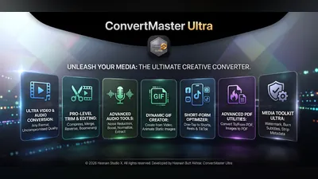
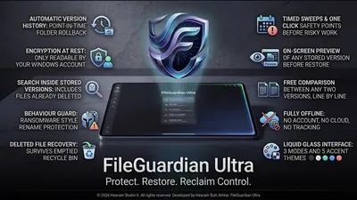
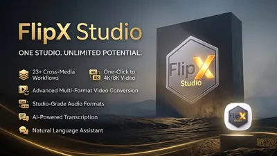
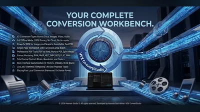
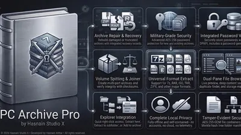
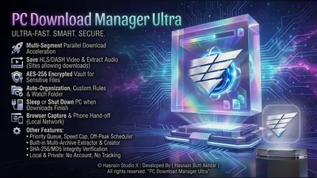
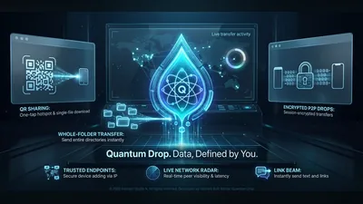

File transfer, conversion and archiving apps
Getting files from one device to another, changing what format they are in, and keeping them somewhere safe afterwards. Three jobs that the cloud made convenient and, in the process, made public.
Why these run on your own machine
Transferring a folder between two machines on the same network does not need a third party in the middle, and routing it through one adds an upload, a download and a copy on a server. The tools here move files directly between your own devices, convert formats on the machine holding the file, and archive without asking who you are.
What to check before you buy anything in this category
- Whether there is a size or speed cap
- Transfer services almost always have one, and it is usually the reason the free tier exists.
- Where the file rests in transit
- A direct transfer between your devices has no resting place. A cloud relay always does.
- Whether archives use a standard format
- An archive you can only open with the tool that made it is a liability, not a backup.
7 files & transfer applications available now

ConvertMaster Ultra Android Convert and compress media on your Android device Video, audio, image and PDF conversion on-device Compression presets for quality and file size Job queue with adjustable concurrency and a local library Full details
FileGuardian Ultra Windows Offline file protection and version history Automatic local version history Protected copies of important files Restore earlier versions on demand Full details
FlipX Studio Windows Convert audio, video, images, and PDFs locally Convert audio, video, image, and PDF files AI-assisted presets and smart output settings Batch processing with clear progress tracking Full details
HSX ConvertStudio Windows Convert documents, images, video and audio locally Convert documents, images, video, and audio formats All conversion runs locally on your device Your files never uploaded to any server Full details
PC Archive Pro Windows Local archive manager for Windows — zip, extract, encrypt Extraction, compression, encryption, hashing and search All processing runs on your own hardware No background scanning — only files you choose Full details
PC Download Manager Ultra Windows Segmented, resumable download manager for Windows Segmented, resumable downloads with local file organization Built-in hashing and archive extraction Network access used only for the downloads you request Full details
QuantumDrop Windows Fast local file sharing over Wi-Fi - no cables Instant local discovery of devices on the same network Drag-and-drop file and folder transfer Transfer progress with speed indicator Full detailsQuestions about files & transfer apps
Is there a transfer size limit?
No. Transfers run directly between your own devices over your own network, so the limit is your hardware rather than a plan tier.
Do the files pass through a server?
No. Nothing is relayed through a third party, which is also why transfers run at local network speed.
Do both devices need the same app?
For direct transfers, yes. Each application explains what it pairs with on its own page.
Are archives readable by other software?
Yes. Standard formats are used throughout, so an archive stays readable whatever you do next.
Other parts of the catalogue
Full Windows catalogue · Android catalogue · Privacy policies · About the studio
Hasnain Studio X® is a registered trademark. Product names shown on this page are trademarks of Hasnain Studio X.